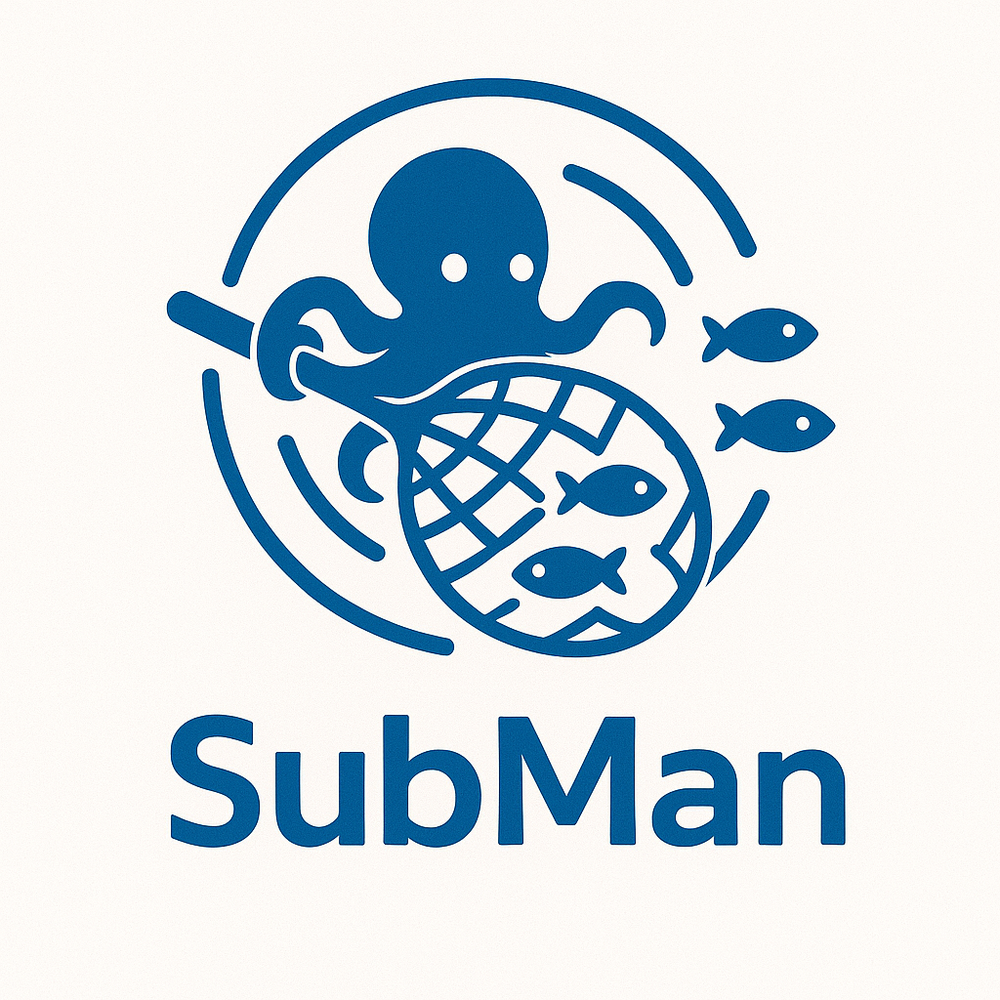

RESTful and streaming interfaces for LDAP-backed subscriber management.
OpenAPI 3.1 reference for every resource — realms, subscribers, services, profiles, clients, access devices, and their ports.
AsyncAPI 3.0 reference for the change streams served by every listing endpoint when called with ?subscribe=1.
?subscribe=1